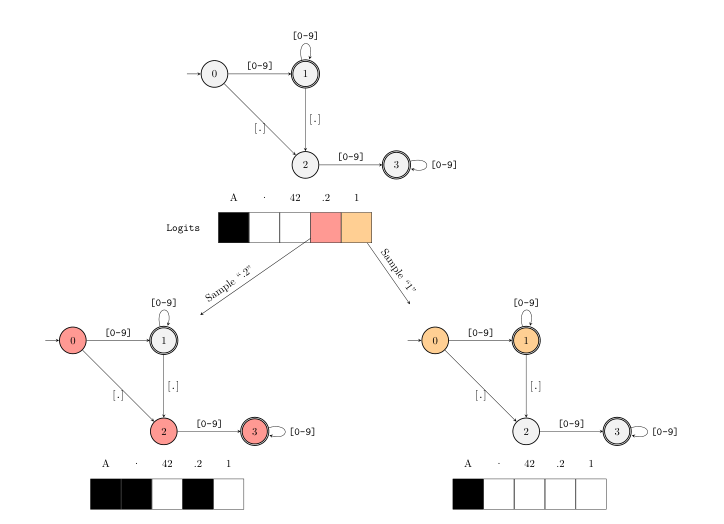

Outlines masks every invalid token as a model decodes, so the output fits your schema by construction
The guarantee holds on a local model, where the library controls the logits, and thins to the provider's own feature the moment you point it at a hosted API.
Generate JSON, then hope it parses
The common way to pull structured data out of a language model is to
ask for JSON in the prompt, read back a string, and call
json.loads on it. When the string comes back malformed,
and it does, the program catches the exception and asks again. Outlines
deletes the second step. It constrains the model's decoding so the
returned string already matches a schema you hand it: a JSON schema, a
regular expression, a fixed set of choices, or a context-free grammar.
The documentation states the property as "always valid JSON."1
The guarantee is genuine because it is produced inside the decoding loop rather than checked once the tokens are out. The design that produces it was written down from first principles in a 2023 paper by the library's original authors.2 The by-construction promise belongs to the local path, where Outlines controls the logits. Point the same call at a hosted API and something else happens. And it is no longer the cheapest way to get a valid schema out of a model, a fact newer engines are happy to report.
Constrain the call to a schema and the parse guard disappears
The path Outlines replaces looks like this. You prompt, you parse, and you wrap the parse in a guard because nothing stopped the model from emitting a trailing comma or a half-quoted key.
import json
raw = client.chat(prompt) # ordinary generation: nothing constrains the tokens
try:
data = json.loads(raw) # may raise JSONDecodeError
except json.JSONDecodeError:
raw = client.chat(prompt) # ask again, and hope this one parses
data = json.loads(raw)On a local model Outlines makes that guard unreachable. You wrap the model once, pass the schema as the second argument to the call, and the returned string is one the schema accepts.3
import outlines
from pydantic import BaseModel
from typing import Literal
from transformers import AutoModelForCausalLM, AutoTokenizer
class Customer(BaseModel):
name: str
urgency: Literal["high", "medium", "low"]
issue: str
model_name = "HuggingFaceTB/SmolLM2-135M-Instruct"
hf_model = AutoModelForCausalLM.from_pretrained(model_name)
hf_tokenizer = AutoTokenizer.from_pretrained(model_name)
model = outlines.from_transformers(hf_model, hf_tokenizer)
reply = model("Alice needs help with login issues ASAP", Customer)
Customer.model_validate_json(reply) # never raises: the tokens could not break the schema
model_validate_json never raises on reply,
because a token that would break the schema was never sampled. The
output type can be a Pydantic model, a raw JSON schema, a
Regex such as Regex(r"[0-9]{3}"), a
Choice, or a full grammar, each passed the same way as the
second argument to the call.4
The index turns a full-vocabulary scan into one lookup
At each step the model produces a logit for every token in its vocabulary. To keep the output valid, you zero the logits of every token that could not continue a valid string and sample from what is left.2 The only hard part is knowing which tokens those are.
Compile the schema to a finite-state machine. The machine's current
state fixes which characters may come next, and therefore which tokens
may. Figure 3 shows this for the regular expression
([0-9]*)?\.?[0-9]*, which matches a floating-point number.
In state 0 the token A is masked out while a digit or a
dot is allowed. Sampling .2 advances the machine, and the
set of allowed tokens shrinks with it.

([0-9]*)?\.?[0-9]*: the current state decides which
tokens are masked, and the mask changes as tokens are sampled.2
Building the mask the direct way means asking, for every token in the vocabulary, whether it is allowed in the current state. That is a scan of the whole vocabulary at every decoding step: a fixed O(N) cost per generated token, with N the vocabulary size.2 For GPT-2's N = 50{,}257 that is fifty thousand membership tests for each token the model emits.
The paper's contribution is to pay that cost once. Before decoding starts, precompute a map \sigma : Q \to \mathcal{P}(V) from each FSM state to the set of tokens valid in it. Every decoding step then becomes a hash-map lookup, O(1) on average, in place of the scan.2 Building the map is the awkward part: a single vocabulary string can match an arbitrary interior piece of the pattern, so the construction starts a match in every viable FSM state, not only the start state.2
The index is not free, and where it costs is memory. Its size tracks
the number of FSM states. For a slightly augmented Python grammar with
un-reduced automata the paper measures a naively built index at around
50 MB, offered as a loose upper bound rather than a typical
schema.2 A context-free
grammar needs more: the index becomes a trie keyed on the parser's
stack values.2 Any claim about
how the masking runs is now a claim about a second package: the FSM
compilation and the index were moved out of the Python library into a
Rust core, outlines-core, "for performance and
portability."5
On a hosted API, the FSM never runs
Everything above needs Outlines to hold the logits in its hand. That is
true on local and open-weight backends, Transformers, llama.cpp, vLLM
and the rest, where outlines-core builds the mask and
applies it inside the decoding loop.15 On a hosted API such as OpenAI, Anthropic,
or Gemini the library cannot reach the logits at all, so it defers to
the provider's own structured-output feature and the FSM masking never
runs.1
Two sentences in the documentation sit in apparent tension, and both are true. Outlines promises valid output "directly from any LLM," and the same documentation notes that structured output "is not available for all models."14 They describe different code paths under one API. The uniform call is a real convenience. The guarantee behind it is not uniform.
There is a quieter version of the same split inside the serving stacks. XGrammar ships as the default structured-generation backend in both vLLM and SGLang.6 A user who runs "Outlines on vLLM" and one who flips on "vLLM structured output" can end up exercising two different engines that offer the same structural guarantee at different costs.6
Outlines is no longer the fastest, and its accuracy cost is contested
The paper's speed claim rests on a single-run comparison against Guidance in 2023, which the authors themselves hedge, "Barring any configuration oversights that might be creating a large run-time discrepancy."2 Two later engines now report beating it. XGrammar reports up to 3.5x faster logit masking on JSON schema and more than 10x on grammars, against baselines that include Outlines.7 llguidance computes its masks on the fly, with "essentially no startup cost" and roughly 50 microseconds of single-core CPU per token on a 128k-token tokenizer. It names the precomputed index as the reason to avoid one: startup time, memory, and a ceiling on constraint complexity.8
| Engine | How the mask is built | Startup cost | Reported speed |
|---|---|---|---|
| Outlines | A precomputed index from FSM states to valid tokens. | Index build; about 50 MB for a Python grammar. | Valid output, no longer the fastest today. |
| XGrammar | A stack-based parser with some masks precomputed. | Partial precompute. | Up to 3.5x faster masking, by its own harness. |
| llguidance | Computed per token, on the fly. | Essentially none. | About 50 microseconds per token, by its own harness. |
So the honest line is narrower than the paper's "significantly outperforms existing solutions." The index guarantees valid output. It is not the cheapest way to guarantee it in 2026, and against retry-and-parse, the path most pipelines still run, that comparison is the wrong one to fixate on anyway.
A separate question is whether constraining the decoding hurts the model's reasoning. "Let Me Speak Freely?" reports large drops: GPT-3.5-turbo's GSM8K accuracy falling from about 76% in natural language to about 49% under JSON-mode.9 The study's strictest arm is JSON-mode, a provider flag, not the FSM constraint engine Outlines runs. dottxt's rebuttal makes exactly that objection. It argues the strict arm used JSON-mode prompting with no schema and no constraint engine, ran mismatched prompts across conditions, and leaned on a language model as its answer parser. On matched re-runs it shows structured generation flat to slightly better, GSM8K 0.77 to 0.78.10 Both sides have a stake, and each rests on a small sample. The structural guarantee is not what is in dispute. The reasoning cost is, and it is open.
Reach for it when you own the model and the schema
The guarantee earns its cost wherever a later step will crash on malformed output and you run the model that produces it: pulling fields into a schema, generating tool-call arguments, holding an agent to an output contract, or forcing an evaluation harness to emit a gradable form.1 Point the same call at a hosted API and it still works, but the guarantee you collect is the provider's, not the finite-state machine's.1
The maintenance signal splits cleanly between the two packages. The wrapper is busy: 84 releases on PyPI, the latest 1.3.3 six days before this writing, several a month through 2026.11 The Rust core that actually holds the masking moves at a different pace: 17 releases in all, the latest 0.2.14 in January 2026, a few a year.12 The repository is Apache-2.0, maintained by .txt, and its page shows roughly 15.6k stars with about 94 open issues and 45 open pull requests on the day of writing.13 One naming note for anyone tracing the design back to its source: the 2023 paper was written at Normal Computing, and the library is now dottxt-ai's.213
Depend on Outlines for valid structure when you run the model yourself. That guarantee is real and cheap to reason about. Treat its speed as adequate rather than leading, confirm whether your serving stack is running Outlines or XGrammar underneath, and keep the reasoning-accuracy question open until you have measured it on your own task. An independent benchmark, or the Rust core's release feed going quiet, would move the assessment.12
Sources
- dottxt · Outlines documentation
- Willard & Louf · Efficient Guided Generation for Large Language Models
- dottxt · Outlines getting started
- dottxt · Outlines output types
- dottxt-ai · outlines-core (GitHub)
- mlc-ai · XGrammar (GitHub)
- MLC · Efficient, Flexible, Portable Structured Generation with XGrammar
- guidance-ai · llguidance (GitHub)
- Tam et al. · Let Me Speak Freely? A Study on the Impact of Format Restrictions
- Will Kurt, dottxt · Say What You Mean: A Response to "Let Me Speak Freely"
- PyPI · outlines (release history)
- PyPI · outlines-core (release history)
- dottxt-ai · outlines (GitHub)